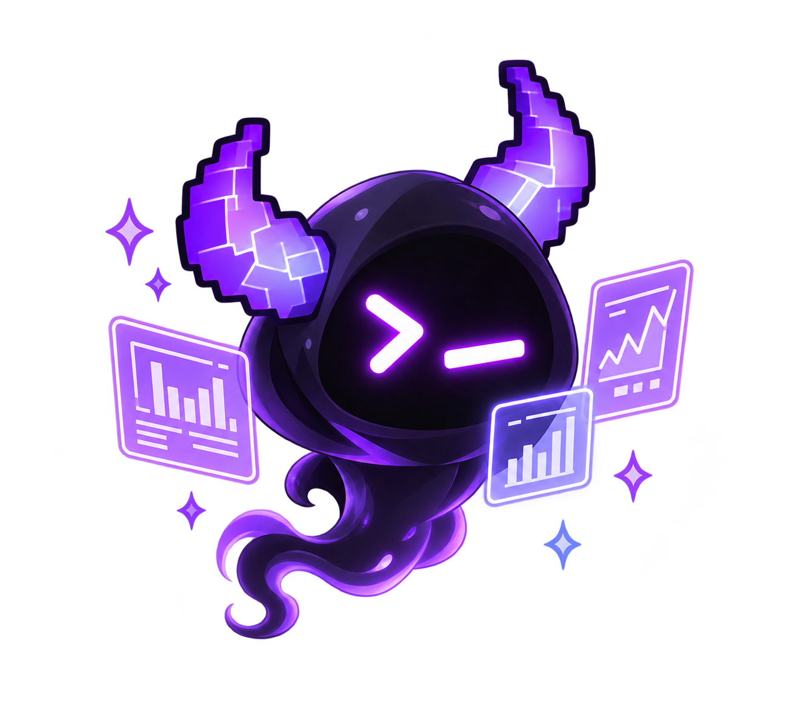

Living workshop / fresh rebuild
A cleaner place for the little things that make the world glow.
A fresh, source-aware workshop built around the supplied Pocket Fonts and original Raskal Labs marks. The codex images are clean, transparent isolation passes from the supplied Little Raskals concept sheets; their untouched originals stay with the project.
- Type
- Pocket Fonts v1.1
- Marks
- User-supplied originals
- Art
- Source-derived cutouts

Source-derived cutout / 2026
Wisp
Sees the unseen, carrying a terminal-smirk face and purple horn silhouette from the supplied concept sheet.
Specimen console
The codex, cut clean.
Each character is a transparent, source-derived cutout. Select one to bring it into the workshop field.
Lineage ledger
Documented milestones, without invented evidence.
The earlier workshop identified these milestones. Its image files were not recoverable after the preview expired, so this rebuild deliberately shows no substitute thumbnails as if they were originals.
-
Integrated horns
Recorded as an original stage in the prior registry. Source image unavailable in this rebuild.
Image not recovered -
Round head A
Recorded as an original stage in the prior registry. Source image unavailable in this rebuild.
Image not recovered -
Round head B
Recorded as an original stage in the prior registry. Source image unavailable in this rebuild.
Image not recovered -
48×48 geometry
Recorded as documented geometry in the prior registry. Source image unavailable in this rebuild.
Image not recovered -
V13 pixel target
Recorded as a documented target in the prior registry. Source image unavailable in this rebuild.
Image not recovered -
Supplied purple emblem
The user-supplied standard purple pixel Raskal head is retained as the current brand asset. It is not claimed as a historical source image.